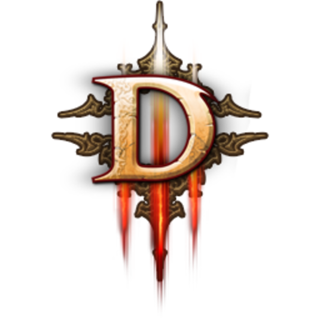

О КОМПАНИИ
На протяжении более 20 лет игры Blizzard Entertainment — в частности, последние новинки: Overwatch™, World of Warcraft®: Warlords of Draenor™, Hearthstone®: Heroes of Warcraft™, Diablo® III: Reaper of Souls™, and StarCraft® II: Heart of the Swarm™ — регулярно становятся лидерами продаж. В каждой серии игр немало «блокбастеров», которые несколько лет подряд удостаивались награды «Игра года». Кроме того, игровой портал Battle.net® насчитывает несколько миллионов активных пользователей: это крупнейшая в мире сетевая платформа для компьютерных игр. Смежная продукция и сувениры по мотивам игр Blizzard Entertainment тоже пользуются у поклонников огромной популярностью. Это фигурки персонажей, романы, комиксы, манга, комплекты для ролевых игр, настольные игры (в частности, игральные карты World of Warcraft — бестселлер в своем жанре), одежда и аксессуары. Следующий шаг — работа над полнометражным фэнтезийным фильмом о мире Warcraft® в сотрудничестве с киностудией Legendary Pictures (фильмы «Человек из стали»,
Игры Warcraft®
Следующая глава в истории Warcraft — World of Warcraft: Legion™, шестое по счету дополнение к World of Warcraft, ролевой многопользовательской интернет-игре, отмеченной рядом международных премий. Выход Legion состоится 30 августа 2016 г. В новом дополнении величайшим героям Азерота предстоит овладеть могущественными древними артефактами и отразить натиск Пылающего Легиона, пока мир еще можно спасти. Вступайте в бой и играйте за новый героический класс — охотника на демонов! В свое время эти опасные и загадочные создания из числа эльфов были изгнаны за то, что дерзнули завладеть запретным могуществом. Теперь эти изгои, устращающе проворные и неуловимые, преследуют врагов, в мгновение ока принимая жуткое обличие, и вершат правосудие на свой лад. Предыдущее дополнение, World of Warcraft®: Warlords of Draenor®, вышло 13 ноября 2014 г. и за а первые сутки продаж разошлось тиражом более 3,3 млн экземпляров. Четвертое дополнение, Mists of Pandaria®, поступило в продажу 25 сентября 2012 г. и за первую неделю разошлось тиражом более 2,7 млн экземпляров. Третье, Cataclysm®, вышло 7 декабря 2010 г. За первые сутки было продано более 3,3 миллиона экземпляров: Cataclysm стала самой быстропродаваемой игрой для PC в мире... вплоть до выхода другой игры Blizzard Entertainment — Diablo III. До Cataclysm этот рекорд был установлен первыми двумя дополнениями к World of Warcraft, World of Warcraft: The Burning Crusade® и World of Warcraft: Wrath of the Lich King®: за первые 24 часа продаж они разошлись тиражом 2,4 млн и 2,8 млн экземпляров соответственно. Исходная игра, World of Warcraft, вышла 23 ноября 2004 г. в США, Австралии и Новой Зеландии; затем в 2005 г. в Корее, Европе, Китае, Сингапуре, Тайване, Гонконге и Макао, в 2006 г. в Малайзии, в 2007 г. — в Таиланде, в 2008 г. в России и ряде стран Латинской Америки, а в 2011 г. — в Бразилии. Во всем мире игра имела беспрецедентный успех и сегодня насчитывает миллионы подписчиков. World of Warcraft предлагается на 11 языках, в зависимости от региона. Игра была удостоена ряда наград и снискала множество похвал со стороны критиков. Hearthstone™: Heroes of Warcraft™ — бесплатная карточная игра Blizzard в жанре «стратегии». В нее можно играть на нескольких платформах: Windows, Mac, iPad и планшетах с Android. Hearthstone — обманчиво простая игра в плане дизайна, но невероятно увлекательная. Она интуитивно понятна всем, а не только тем, кто уже знает настольную карточную игру Warcraft. В декабре 2014 г. вышло первое дополнение к Hearthstone — «Гоблины и гномы»™. Первую игру Blizzard Entertainment из серии Warcraft, Warcraft: Orcs and Humans™, неоднократно называли лучшей стратегией 1994 г. Ее продолжение, Warcraft II: Tides of Darkness™, (1995 г.), было удостоено многочисленных премий, в том числе первой для компании премии «Игра года». Игра Warcraft III: Reign of Chaos, вышедшая в 2002 г., также была отмечена рядом наград. Наряду с последним на сегодняшний день продолжением, Warcraft III: The Frozen Throne®, (оно вышло в июле 2003 г.) и играми StarCraft, она стала ключевой игрой на профессиональных турнирах видеоигр.
Игры StarCraft®
В настоящий момент идет работа над третьей и последней главой в грандиозной трилогии StarCraft II — StarCraft II: Legacy of the Void™. В ней игрокам предстоит объединить разрозненные фракции протоссов в борьбе против древнего зла, которое угрожает гибелью всей галактике. Лишь объединенными усилиями Золотой Армады, могущественной боевой флотилии протоссов, можно остановить натиск тьмы, пока она не поглотила все живое в секторе Копрулу. 12 марта 2013 г. вышло первое дополнение к сверхпопулярной стратегии в реальном времени StarCraft II: Wings of Liberty — StarCraft II: Heart of the Swarm . В нем разворачивается новая кампания, сюжет которой выстроен вокруг Королевы Клинков. Пылая жаждой мести, она стремится снова объединить под своим началом раздробленные войска Роя зергов. В Heart of the Swarm вводится несколько новинок, призванных улучшить самый популярный аспект StarCraft II — соревновательную сетевую игру. Игра StarCraft II: Wings of Liberty вышла 27 июля 2010 г. и за первые сутки разошлась тиражом более 1 млн, а за первый месяц — более 3 млн экземпляров: это самая быстрораскупаемая стратегия в реальном времени в истории компьютерных игр. Одновременно со StarCraft II была выпущена новая версия игровой платформы Battle.net. Она подверглась основательной переработке и стала для пользователей Blizzard единым сетевым ресурсом нового поколения. Среди новых функций, в частности, был введен голосовой чат, хранение игровых данных на сервере, новая система лиг и рейтингов, достижения, отслеживание статистики и т.д. Оригинальная игра StarCraft вышла в марте 1998 г. и стала третьим бестселлером Blizzard Entertainment, лидером продаж в 1998 г., по данным PC Data. Дополнение StarCraft: Brood War™ было названо лучшим дополнением 1998 г., и многие специалисты по-прежнему считают его лучшим дополнением к компьютерной игре из ныне существующих.
Игры Diablo®
Diablo III вышла 15 мая 2012 г. и в первые сутки продаж разошлась тиражом более 35 млн экземпляров: новый абсолютный рекорд продаваемости среди компьютерных игр. Еще более 1,2 млн игроков получили Diablo III в подарок в рамках акции «Годовая подписка на World of Warcraft». В итоге в первую неделю обладателями Diablo III стали более 6,3 млн человек. Это самый яркий результат выпуска игры в истории компьютерных игр. 3 сентября 2013 г. компания вернулась к разработке консольных игр — поклонники долго этого ждали! Diablo III была адаптирована к Xbox 360 и PlayStation® 3. И профессиональным критикам, и игрокам очень понравились новая система добычи, уровни сложности и другие изменения, внесенные в консольную версию. Многие из этих новинок впоследствии были перенесены и в версию для PC. Новая глава в грандиозной саге Diablo III — дополнение Reaper of Souls — вышла 25 марта 2014 г. (в версии для Windows и Mac). За неделю игра разошлась тиражом более 2,7 млн экземпляров. Нововведения, которые появились в Diablo III с выходом Reaper of Souls, перешли и в расширенную консольную версию, Ultimate Evil Edition™ (для PlayStation 3, PlayStation® 4, Xbox One и Xbox 360), 19 августа 2014 г. Первая игра Diablo поступила в продажу в конце декабря 1996 г. и сразу стала лидером продаж в США. По общему мнению, жанр ролевых игр обязан Diablo «вторым рождением». В 2000 г. вышло первое продолжение игры — Diablo II. Оно сразу побило все рекорды по темпам продаж в сфере компьютерных игр. В 2001 г. было выпущено дополнение, Diablo II: Lord of Destruction™, разошедшееся тиражом в более 1 млн экземпляров в первый же месяц продаж и вошедшее в число самых продаваемых игр в 2001 г., не говоря о многочисленных восторженных отзывах критиков.
Heroes of the Storm™
Heroes of the Storm™ — игра с напряженными командными боями, в которых участвуют культовые персонажи из разных игр Blizzard. Герои и злодеи Азерота, Санктуария, сектора Копрулу в Heroes of the Storm оказываются вовлечены в межпространственное возмущение материй под названием Нексус, где им предстоит сражаться друг с другом командами за славу, за жизнь... и просто забавы ради.
Overwatch™
Overwatch™ — командный шутер с яркими героями, в котором делается акцент на общедоступность и увлекательность. Действие Overwatch разворачивается в совершенно новом для Blizzard игровом пространстве. Персонажи: солдаты, ученые, искатели приключений и иные колоритные фигуры — сражаются между собой по всему миру в футуристической обстановке. Всего в игре 21 герой: неустрашимая Трейсер, умеющая подчинять себе время, охотник за головами Маккри, блестящий ученый — горилла Уинстон и другие. У каждого из них собственное оружие и способности, но успеха они могут добиться только в команде.
НАШИ ПРИНЦИПЫ
ИГРА ПРЕВЫШЕ ВСЕГО
Вся работа Blizzard Entertainment направлена на то, чтобы наши игры пользовались успехом у пользователей. Первоочередная задача каждого отдела Blizzard Entertainment, будь то отдел дизайна, программирования или пользовательской поддержки, – сделать наши игры как можно более яркими и увлекательными для как можно более широкой публики.
ПРИОРИТЕТ КАЧЕСТВА
«Совершенствование до мелочей» – наш принцип не только в отношении игр, но и в любом аспекте работы. Мы вдумчиво и серьезно подходим к выполнению любой задачи. Мы с готовностью принимаем откровенные, беспристрастные отзывы и опираемся на них в повышении качества нашей работы. В конечном счете большая часть игроков запомнит не то, что игра вышла чуть позже, а то, что это великолепная игра.
ПОРЯДОЧНОСТЬ И ПРИВЕТЛИВОСТЬ
В нашей профессии первое впечатление важно, но второе не в пример важнее. Поэтому в отношениях с игроками, коллегами и деловыми партнерами мы всегда придерживаемся принципа исключительной порядочности и профессиональной безупречности. Поведение каждого сотрудника Blizzard Entertainment, будь то на сайте или форуме или в реальной жизни, – часть общего имиджа компании.
ПРИЗНАЙ СВОИ УВЛЕЧЕНИЯ
Глупо отрицать – все мы в душе законченные фанаты игр и всего, что с этим связано. Ультрасовременные технологии, комиксы, научная фантастика, видеокарты последнего поколения, коллекционные фигурки… Чем бы ни увлекались наши сотрудники, главное, чтобы они приняли это увлечение как часть работы и отнеслись к нему творчески. Каждое хобби – неотъемлемая часть яркой, креативной атмосферы Blizzard.
НАМ ВАЖЕН КАЖДЫЙ ГОЛОС
Подать хорошую идею может любой. Всего, чего мы добились, мы добились только потому, что в Blizzard Entertainment имеет значение голос каждого игрока и каждого сотрудника. Всем, кто работает в Blizzard, настоятельно рекомендуется высказывать свое мнение, прислушиваться к другим, уважать чужую точку зрения и воспринимать критику просто как средство прийти к талантливой идее иным путем.
МЫ МЫСЛИМ В МИРОВОМ МАСШТАБЕ
В игры Blizzard Entertainment играют во всем мире. Мы ценим культурное многообразие, которое лежит в основе индивидуальности, и стремимся расширить сообщество наших поклонников во всех странах мира. Мы также всегда рады принять талантливых и увлеченных людей в число своих сотрудников: за ними будущее компании и будущее наших игр.
ЛИДЕРСТВО ОЗНАЧАЕТ ОТВЕТСТВЕННОСТЬ
Наша продукция и методы работы оказывают влияние не только на сотрудников и игроков, но и на игровую индустрию в целом. Как один из мировых лидеров в сфере компьютерных игр, мы стремимся принимать ответственные в этическом плане решения, всегда имеем в виду интересы игроков и подаем пример безупречного качества и профессионализма на все времена.
ОБУЧЕНИЕ И РОСТ
Мир компьютерных игр никогда не стоит на месте. Технологии непрерывно совершенствуются, меняется техника, дизайнерские концепции устаревают. С момента основания Blizzard Entertainment мы стараемся работать с каждым днем все лучше, учитываем предыдущий опыт, учимся друг у друга и развиваем в себе стремление всегда быть на высоте. Ответственность за это несет каждый сотрудник в отдельности и компания в целом. В получении необходимых знаний и опыта сотрудники могут рассчитывать на безоговорочную поддержку и помощь коллег, руководства и компании как таковой.